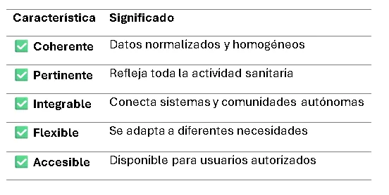
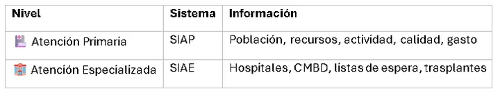
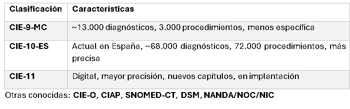
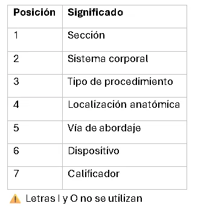

Tema 04 · SISArtículo2 min de lectura
Sistemas de Información y Clasificación Sanitarios: Guía Visual para Estudiantes
Resumen visual y práctico para estudiantes sobre sistemas de información y clasificación sanitarios.
- Guía visual
- Estudiantes
- Clasificación
📚 Sistemas de Información y Clasificación Sanitarios: Guía Visual para Estudiantes
¡Hola, comunidad! 👋 Soy estudiante de Documentación Sanitaria y hoy quiero compartir un resumen visual y práctico de uno de los temas más importantes de nuestra carrera: los sistemas de información y clasificación sanitaria. Este tema no solo es clave para aprobar, sino para entender cómo se organiza y gestiona la información en salud. 💡
🔹 Tema 1: Sistemas de Información Sanitaria
1️⃣ Sistema de Información Sanitaria (SIS)
📌 Información sanitaria: Conjunto de datos que el Sistema Nacional de Salud (SNS) analiza para:
- 🏥 Tomar decisiones sobre recursos
- 📈 Mejorar protocolos asistenciales
- 🔬 Apoyar investigación
- 📊 Gestionar el sistema sanitario
📌 SIS
Combina: 👨⚕️ Personas | 📝 Procedimientos | ⚙️ Equipos | 📋 Protocolos
Objetivo: recoger, procesar, analizar y utilizar información para mejorar políticas de salud.
2️⃣ Características de la información sanitaria

Ver imagen a tamaño completo3️⃣ Historia Clínica (HC) 📋
- Definición: conjunto de documentos sobre la situación y evolución clínica de un paciente (Ley 41/2002).
- Tipos de datos: 🏥 Clínicos: diagnósticos, tratamientos, pruebas 📊 No clínicos: demografía, economía, registros
4️⃣ CMBD (Conjunto Mínimo Básico de Datos)
- 📌 Qué es: Base de datos hospitalaria estandarizada
- 🎯 Funciones: conocer demanda, analizar enfermedades, investigación, estadísticas nacionales e internacionales
- 📌 Variables principales: paciente, diagnósticos, procedimientos, centro sanitario
5️⃣ Indicadores Clave del SNS
- 🎯 Objetivo: evaluar salud de la población y detectar áreas de mejora
- 📊 Clasificación: esenciales/no esenciales, salud, determinantes sociales, sistema sanitario
- ✅ Criterios: reproducibilidad, relevancia, validez
6️⃣ Información por niveles asistenciales

Ver imagen a tamaño completo🔹 Tema 2: Codificación y Clasificaciones ⚠️
Historia de la codificación
- XVII: John Graunt → tablas de mortalidad
- XIX: William Farr → estadísticas sanitarias
- XIX: Jacques Bertillon → causas de muerte
- 1900: Primera conferencia internacional
- 1946: OMS asume clasificación (CIE)
- 1975: CIE-9-MC
- 1990: CIE-10
- 2016: CIE-10-ES en España
Qué es codificar
🔄 Transformar lenguaje clínico → código alfanumérico normalizado
Beneficios: unifica lenguaje, facilita registro, análisis estadístico y planificación sanitaria, permite comparación internacional.
Clasificaciones principales

Ver imagen a tamaño completo🔹 Tema 3: CIE-10-ES Procedimientos ⭐ Muy importante
Estructura de los códigos (7 caracteres)

Ver imagen a tamaño completoÍndice alfabético y anexos
- 🔑 Término principal, modificadores, “véase” y “buscar”
- 📎 Anexos: A-Tipos de procedimientos, B-Comparación, C/D-E-Definiciones, G-Dispositivos, H-Caracteres especiales
- ⭐ Anexo I/Y: Tipos de abordaje (abierto, percutáneo, endoscópico, orificio natural/artificial, externo)
🔹 Tema 4: CIE-10-ES Diagnósticos ⭐ Importante
- Componentes Tomo I: Índice Alfabético de Enfermedades + Lista Tabular (22 capítulos)
- Jerarquía de códigos: Capítulo → Sección → Categoría → Subcategoría → Código final
- Modificadores: esenciales (precisión) / no esenciales (entre paréntesis)
- Códigos de manifestación: cursiva, acompañan diagnóstico base, nunca diagnóstico principal
🎯 Consejos clave de estudio
✔ Entender la lógica de la codificación ✔ Memorizar funciones del CMBD y diferencias CIE-9/10/11 ✔ Repasar tipos de abordaje y estructura de códigos ✔ Revisar feedbacks y ejercicios prácticos
💡 Tip visual: Este tema se entiende mejor con mapas mentales, tablas y códigos de ejemplo. Yo los hago usando colores para distinguir procedimientos, diagnósticos y niveles asistenciales.